1. What is seven million nine thousand and ninety less nine hundred thousand and four written in figures?
2. What is total value of digit 4 in the number 75.346?
3. Round off 793954 to the nearest ten thousands
4. 1089 square tiles were used to cover a square room leaving a margin 0.5m in the width all round the floor of the room. If the length of each tile was 30cm, calculate the length of the room in metres
5. What is 81⁄3% as a fraction in its simplest form
6. Calculate the area of the figure below
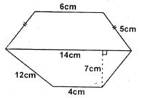
7. A man had s sheep. He gave t sheep to his son. The daughter got 8 less sheep than his brother. How many sheep was he left with?
8. Work out
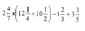
9. Dan borrowed sh.20000 from a bank that gave compound interest at the rate of 12% p.a. He paid back the money in two years. How much money did he pay back altogether?
10. What is the least number that can be subtracted from 2736989 to make it divisible by 11?
11. The marked price of an item was sh. 750. Pendo bought the item after being allowed a 20% discount. How much profit did he make if he sold it at a profit of 15%?
12. Calculate the perimeter of the figure below
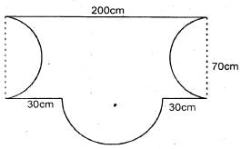
13. A quarter of the number of pupils in a school are girls. What is the ratio of the number of girls to boys in the school
14. What is the next fraction in the sequence 3⁄5, 7⁄25, 11⁄125, 15⁄625, ____
15. A string 88cm long was wounded round the curved surface part of a cylindrical tin ten times. Calculate the base area of the tin?
16. Calculate the volume of the wedge drawn
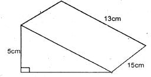
17. A man was paid a total of sh. 8400 after selling a plot. His basic salary was sh. 3900. If the commission paid was 2.5% of the sales made above sh. 50,000, what was the value of the plot?
18. Arrange the fractions from the smallest to the largest. 4⁄5, 7⁄8, 5⁄7 and 6⁄7
19. A square whose area is 25cm2 is used to represent a piece of land whose actual area is 100km2. What is the scale used in the map?
20. The ratio of blue to red biro pens in a packet was 6:13. If there were 42 more red than blue biro pens, how many pens were there altogether?
21. A motorist left town A for town B at 10.00a.m travelling at a speed of 30km/h. On his way back he increased his speed by l0km/h. He stayed in town for one hour. If the distance between the two towns is 120km which of the following graphs represents this information?
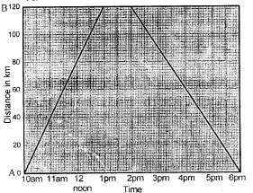
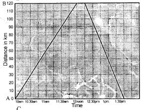
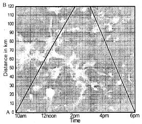
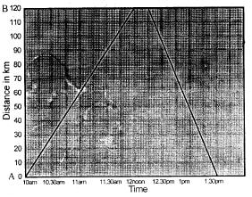
22. A bus traveling at a speed of 72km/h took 25 seconds to cross a bridge. What is the length of the bridge?
23. The marked price of a generator is sh. 11500. Japheth bought it cash and received a 10% discount. The hire purchase price of the same generator requires a deposit of sh. 6500 followed by 7 equal monthly instalments of sh. 1050 per month, how much more is the hire purchase price than the cash price?
24. A plane left Accra at 2045hrs. The journey to Johannesberg took 11^- hrs at what time in 12 hours clock system did the plane land at Johannesberg?
25. It takes 21 workers 20 days to complete a certain job. How many more days will it take to complete the same job if six of the workers failed to turn up?
26. Calculate the area of the triangle drawn below
27. Musa was sent to buy the following items from a shop.
4 exercise books for sh. 120
A 500g tin of blue band at sh. 180 per kg
2 - 5kg packet of unga @ sh. 150
11⁄4kg cooking fat at sh. 80 per kg
28. An empty pick up weighed 3.08 tonnes. It was loaded with 18 bags of cement each weighing 50 kg and 22 bags of maize each weighing 95kg. What was the total mass of the loaded pickup in tonnes?
29. In the year 2015 Marvin harvested 7920 bags of maize. This was 20% more than the number of bags he had harvested in the year 2014. How many more bags of maize did he harvest in the year 2015 than year 2014?
30. Construct a parallelogram ABCD in which line AD = 6cm DC = 7.5cm and acute angle ADC = 75°. What is the length of diagonal DB?
31. In the figure below line AB is parallel to CD. Angle EOG = 72° and line AO = AB
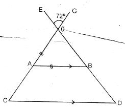
32. A shopkeeper had the following denomination in her cash tray.
12 sh. 1000 notes
7 sh. 500 notes
40 sh. 50 notes
25 sh. 20 coins
33. The mean mass of 8 teachers is 75kg. The mean mass of 6 of them is 72kg. If one of the remaining teachers weighs 24kg less than the other one. What is the mass of the heavier remaining teacher?
34. Given that x = 2y, y = z - 2 and z = 8. What is the value of
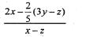
35. In the figure below line ABC is parallel to line DEF. Line DB is parallel to line CEG. Angle BCE = 34° and angle DGE = 90°
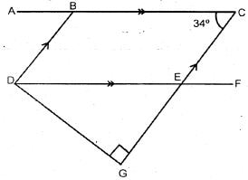
36. Solve the value of p in the equation
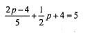
37. A watch loses 3 seconds every hour. It was set right on Sunday at 12.00 noon. What time did it show on Friday when the correct time was 12.00 noon?
38. A closed rectangular box measures 18cm on its length and 15cm on its width. It was 10cm high. It was painted on all its faces except its top and bottom sides. Calculate the surface area of faces painted?
39. Simplify the following inequality
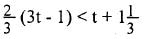
40. The sum of two number is 105. The number are in the ratio 7:3. What is the difference between the two numbers?
41. A rectangular tank holds 3240 litres of water when two thirds full. Its base area measures 1.8m by 1.2m. What is the height of the tank?
42. The table below shows the amount of milk delivered to K.C.C by a certain farmer in one week
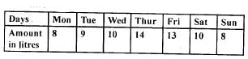
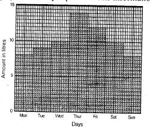
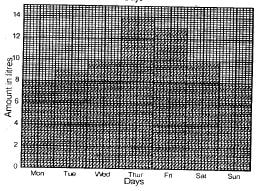
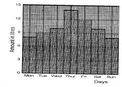
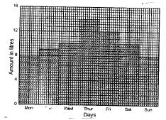
43. Hezzy travelled from his home to school at a speed of 2km/h. On his way back home he travelled at 4km/h. The total time taken was 3hours. What is the distance from Hezzy's home to school and back?
44. The area of a triangular plot is 0.6 hectares. One of its shorter sides is 75m. What is the measure of the other short side?
45. What is the name given to the solid formed after folding the net drawn below?
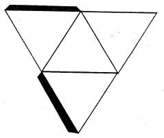
46. A woman spends 3⁄10 of his land to grow maize and 1⁄5 to grow beans. He uses halt of the remainder to grow vegetables and the rest to grow potatoes. If he uses 0.25 hectares to grow potatoes, calculate the total size of the woman’s land.
47. The pie chart below shows how a pupil spends his day
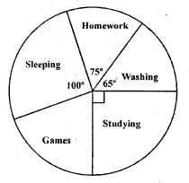
48. The scale used in a map is 1:50 000. What is the drawing length of a square plot whose actual area is 100km2
49. The table below shows part"of inland and interstate money orders commission
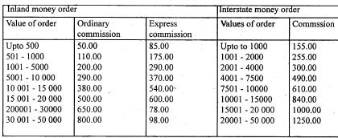
50. What is the next shape in the pattern
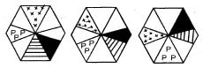
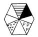
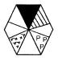